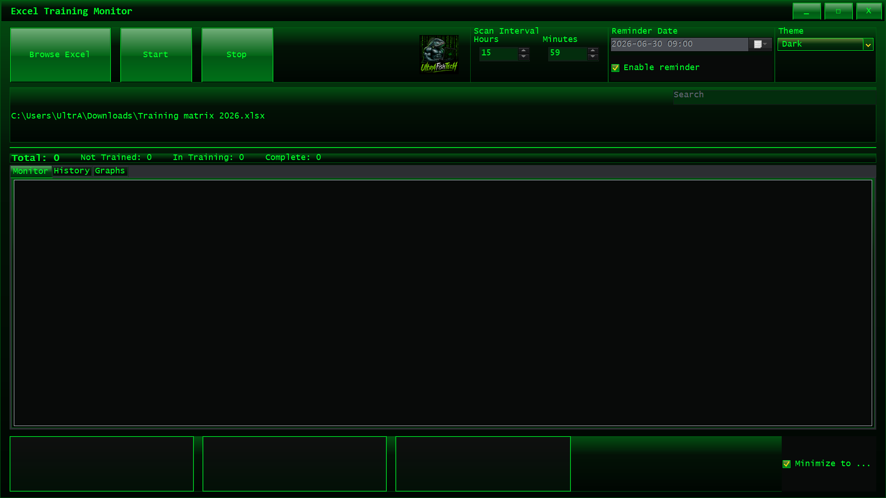
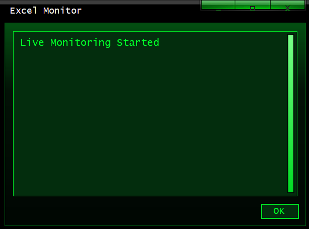
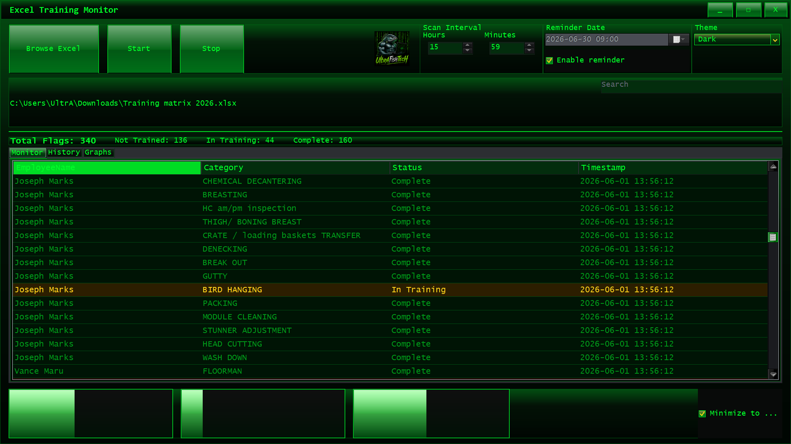
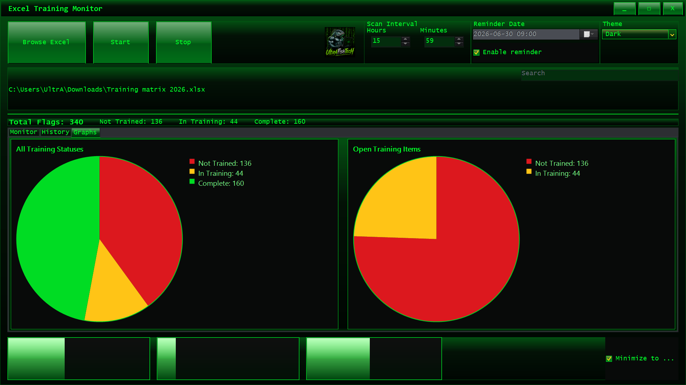

Version
Current source version: 1.0.2
Previous validated version: 1.0.1
Build script auto-increments patch versions.
Excel Training Monitor is a Matrix-themed training spreadsheet monitor and GridBook editor. It can create and edit Excel files, watch training status changes, show grouped reminders, export CSV and chart images, print reports to PDF, and send optional ntfy.sh reminders to phones or email.
Current source version: 1.0.2
Previous validated version: 1.0.1
Build script auto-increments patch versions.
★★★★★
Windows 10/11 x64




Source: https://github.com/SuperEgg9562/ExcelTrainingMonitor Release: https://github.com/SuperEgg9562/ExcelTrainingMonitor/releases/latest Page: https://superegg9562.github.io/ULTRA/html/excel-training-monitor.html Release assets: - Portable self-contained ZIP - Optional installer EXE when Inno Setup is available - Clean source/pipeline ZIP
ExcelTrainingMonitor.exe.ExcelTrainingMonitorSetup-<version>.exe and follow the prompts.build.bat from the repository root.artifacts.